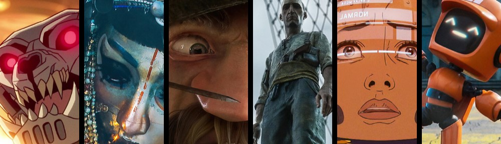

AN ANIMATED ANTHOLOGY SERIES ON NETFLIX
AN ANIMATED ANTHOLOGY SERIES ON NETFLIX
Love, Death + Robots is an animated anthology series on Netflix, where each episode dives into a unique blend of sci-fi, fantasy, horror, and dark comedy. With a mix of surreal and unique animation styles never seen before and mind-bending stories that keeps you gripped to your seat, this series explores the human experience, pushing the boundaries of technology, artificial intelligence, and a lot lot more. From futuristic wars to twisted fantasies, each episode is a visual and narrative adventure that leaves you in awe of it.The series is a re-imagining of David Fincher and Tim Miller's long in-development reboot of the 1981 animated science fiction film Heavy Metal, which was originally planned to follow the feature length format of the original film but one that could be better adapted for the new generation. The project however was in development hell for eleven years due to the creative differences between the crew and the studios as well as the lack of interest of the latter. Eventually, Netflix became interested in the idea and agreed to be the distributor of the project, but instead of a film it would be released as a television series.The animated series consists of a collection of short films, produced by different casts and crews, though some episodes have some overlap in certain crew members. The series title refers to each episode's thematic connection to one or more of the three titular subjects. The series has three seasons and each season is referred to as a 'Volume', with Volume I released on March 15, 2019; the Volume II on May 14, 2021; and the Volume III on May 20, 2022. And Volume IV already announced and in-development.Although I love pretty much every episode quite a lot here I've only listed three of my most favorite from the show in no particular order, [The episode descriptions contain HEAVY SPOILERS so read this next part at your own discretion]

Volume I . Episode 18A platoon of Red Army soldiers hunts ghouls in the Siberian forests. Sgt. Sergei Pavlovich and Lieutenant Nikolai Zakharov raise concerns that the men are too dispersed, but the Major dismisses their worries. Following a bloody victory, Scout Okchen finds the decomposed corpse of a fallen Secret Police agent, Boris Grishin. Grishin's notebook describes "Operation Hades", an attempt to summon ghouls to fight for the Red Army. However, the summoners failed to control them and are killed. Sergei wishes to use this information to get rid of the ghouls, but Zakharov fears it would expose the government's past errors. As they locate a burrow, Okchen, and another soldier, Pogodin ready munitions to seal the ghouls' nest, but the blast instead opens the entire burrow. The horde is larger than expected, so Zakharov orders a last stand, commanding his son to relay a message to bombard their current location to kill the horde. The ghouls kill the whole platoon by the morning, but planes fly over them and begin carpet-bombing the site.
Directed by István Zorkóczy

Volume I . Episode 2Long after the fall of humanity, three robots (K-VRC, XBOT 4000, and 11-45-G) wander through a post-apocalyptic city, exploring first-hand how humans lived based on the things they left behind. They investigate human sports, nutritional consumption, and eventually pets when they encounter a living cat, which proceeds to follow them. The three robots learn about their origins and later arrive at what appears to be a nuclear missile base. 11-45-G explains that humans died out from environmental disasters caused by their own actions, while K-VRC states that at one point, humans genetically engineered their cats, giving them intelligence. The cat then proves this by showing it can speak, demanding to be petted, while many other cats in the base corner the three robots.Due to widespread popularity of this particular episode, it became the only one from the whole series that received a sequel in Volume III.
Directed by Víctor Maldonado & Alfredo Torres

Volume III . Episode 2 A giant man-eating crustacean called a "thanapod" violently boards a shark-hunting ship, slaughtering most of its crew before occupying the ship's hold. After drawing straws, the ship's first mate and navigator, Torrin, is unfairly chosen by a bigger crewmate (who drew a shorter straw than Torrin) to confront the thanapod. Puppeteering the body of a slain crewman, it demands to be taken to the nearby Phaiden Island, where it will presumably feed on the unsuspecting population. Torrin accepts on the condition that his life be spared. Throwing the prior cheating crewmate to the thanapod, and holding the crew at gunpoint, he asks them to vote on whether to agree to the thanapod's demands or to trick it by dropping it off on a farther deserted island, a longer trip that makes survival less likely but spares Phaiden Island's population. Torrin then executes two of the crew who voted to go to Phaiden Island and feeds their bodies to the thanapod to buy time. However, the thanapod demands more food to feed its newly hatched offspring. When the crew mutinies, Torrin kills them and feeds them to the thanapods. Torrin reveals to the last crew member that every crew member voted for the shorter voyage before pushing him to his death. Nearing Phaiden Island, Torrin then sets the shark oil in the ship's hold on fire and escapes in a lifeboat, killing the thanapod and its brood.
Directed by the one and only David Fincher
There are still quite a few more episodes that I absolutely adore like Sonnie's Edge, The Witness, Beyond the Aquila Rift, Fish Night, Zima Blue, Ice Age from Volume I; Pop Squad, The Tall Grass, The Drowned Giant from Volume II; Three Robots: Exit Strategies, The Very Pulse of the Machine, Mason's Rats, Jibaro from Volume III.
Hmphh, well I don't think I can possibly explain in words exactly why I love this show but I'll try my best. To start, the surreal world and it's unique artstyle is what captured me in the first place to start watching this show. Then to top it off the incredible mind twisting story-telling. Also the fact that one of my favorite film director David Fincher is one of the creators. There goes everything that captured me from the outside. Now let's talk about all the things I realized while watching the show: each episode starting, building, climaxing and finishing a whole new world and it's complicated stories in just 20 or so minutes, bit hard to believe isn't it? Then comes the beautiful artstyle, the use of different directors, studios and animators really helped the case I would say. Each episode has a completely unique vibe to it. You don't have to worry about a monotonous sit-through of a whole season just anticipating the ending. While I've yapped enough about the art-style that makes me wanna throw my life away just to go live in a forest and learn motion graphics all day, I think the show wouldn't have meant as much to me if it wasn't for the out of this world(literally, it's sci-fi ;3) story-telling. Each episodes shows a story that depicts something unimaginable and unpredictable. Many episodes had powerful themes that impacts your sub-conscious and makes you want to think more deeply. I think I've said enough to prove just how much I enjoy this show and I can never recommend it enough to anyone who hasn't experienced it already. It's a must watch. I still rewatch my favorite episodes time and time again and yet it has never failed to leave me in complete awe of it.